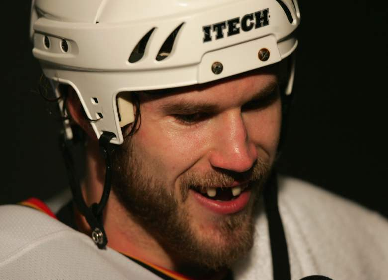

Head Injuries in Hockey
Mission Statement
This website is dedicated to raise awareness of head injuries within ice hockey as well as brining public attention to the disease Chronic Traumatic Encephalopathy (CTE). Hopefully through education and awareness hockey will become a safer game encouraging more to play.
Head Injuries and Hockey
Hockey is a fast paced full contact support where injuries are frequent and expected. The evolution of head protection in hockey has been substantial going from no helmets at all to advanced head protection designed to reduce impact and damages taken by the head. Despite these advances, debilitating head injuries are suffered by hockey players of all skill levels every year.
According to the Minnesota Department of Health boys and girls hockey has the highest rate of concussion within high school students as seen below on the right compared to the data collected on the left by Dustin Fink at The Concussion Blog showing the number of concussion per month in the NHL over the years.

How to Keep Yourself Safe
Although hockey might have a high incidence of injury does not mean we should cut it out altogether. Hockey is an amazingly fun team sport when played softly. The most important thing to keep yourself safe is your helmet. If in Canada make sure that your helmet is HECC (Hockey Equipment Certification Council) certified. The HECC goes through numerous tests to make sure that a hockey helmet (to an extent) will be able to adequately protect yourself from head injuries. The HECC says their testing focuses on, "area of coverage, extent and form of protective material, strength and elongation of the retention system, and shock absorption"(HECC 2018), when evaluating the safety of a helmet. One point to keep in mind is that hockey helmets can only be HECC certified up until a certain year. Once a HECC helmet is no longer certified it is time to buy a new helmet that is certified to be safe.
Another key point is the risk posed to young hockey players. CTE is caused by long term head injuries which starts as early as adolescence for some hockey players. The American Academy of Pediatrics agrees with this point stating, "hockey players age 15 and younger should not body check other players" (AAP) claiming that , "high-speed collisions, combined with size differences within age groups, and a false sense of security due to protective equipment have all contributed to increased checking-related injuries" (AAP). This sentiment can be seen through minor hockey leagues such as Hockey Canada banning contact from Canadian Peewee hockey (under 13). Marc Rizzardo, sport physiotherapist and SportMedBC board member, commended the move by saying, "The new rule will allow players to develop in two areas that will help cut down the number of injuries. First the players will be much stronger when hitting is introduced so they will be able to withstand the hit better because they will be stronger on their skates, have better balance and have overall stronger musculature. Secondly, the extra two years will allow them to enhance their ability to see the ice better and they are less likely to get hit with their heads down." (Rizzardo 2013)
What is CTE?
Chronic Traumatic Encephalopathy (CTE) is a degenerative brain disease that is caused through repetitive brain injury which makes it common in sports players. After sustaining multiple brain injuries a protein called Tau forms in a clump within the brain that will cause brain cell death therefore loss of material within the brain. The Tau protein is supposed to be responsible for stability in neuron structure, but through repetitive injury can cause these adverse effects. Below is an example of the effect CTE has on the brain.
Symptoms and Diagnoses of CTE
CTE for the most part can only be tested post-mortem upon further brain examination. The Concussion Legacy Foundation explains the process of diagnosis as, "doctors with a specialty in brain diseases slice brain tissue and use special chemicals to make the Tau clumps visible. They then systematically search areas of the brain for Tau clumps with a unique pattern specific to CTE." (CLF). Although with new innovations from UCLA, "have opened the door to being able to diagnose CTE in living test subjects, by identifying concentrations of tau protein. With diagnostic tests which can identify the signs of early onset CTE" (Brain Injury Research Institute). With ever increasing research breakthroughs in diagnosis of CTE will be possible to be able to recognize and treat CTE patients more effectively.
Symptoms of CTE can include:
- Mood Changes
- Memory Issues
- Impaired Judgment
- Dementia
- Aggressive Behavior
- Depression
Because of these symptoms those who suffer from CTE have been victims of suicide. Stories of these victims can be seen under the Case Studies tab.
Derek Boogaard
Derek Boogaard was a Canadian born hockey player who got drafted in 2001 to the Minnesota Wild. As an enforcer (the tough guy on the team) Boogaard was no stranger to large hits and fights. After suffering a major concussion in late 2010. At this time Boogaard turned to drug and alcohol abuse. He is described to exhibit ". .erratic behavior before his death, including prescription drug abuse, which may have prevented diagnosis of his neuropathological condition while he was alive, and clearly contributed to his death at such a relatively young age." (Gever 2011) Friends and family of Boogaard noticed the sharp change in personality to a darker more depressed person. In May 2011 Boogaard overdosed on a mixture of alcohol and oxycodone causing him to die at age 28. Upon autopsy it was determined that Boogaard has been suffering from CTE.
Steve Montador
Steve Montador was a Canadian hockey player who played with various teams over his career. While playing for the Chicago Blackhawks, Montador suffered a major concussion requiring a year of recovery and therapy. After his concussion Montador suffered from depression. Montador was adamant about helping fellow players who had suffered similarly to Montador which led his decision to donate his brain to science after he had passed away. Unfortunately Montador passed away suddenly at age 35 in February 2015. Four days after his death, Montador's wife gave birth to their son. Montador's father Paul Montador describes his son's death as, ""It's bittersweet. I've lost a son, on the one hand. And that can't be changed. But ... it brings some small sense of explanation as to why these things were happening to him — and that he had no control over them."(Montador 2015) Studies of Montador's brain indicates that he was suffering from CTE. Before his death Montador had attained an attorney to explore a lawsuit against the NHL for lack of warning about the longer term effects of multiple head injuries.
APA Citations
Brain Injury Research Institute. (n.d.). What Is CTE? Retrieved May 16, 2018, from http://www.protectthebrain.org/Brain-Injury-Research/What-is-CTE-.aspxConcussion Legacy Foundation. (2018, April 13). What is CTE? Retrieved May 16, 2018, from https://concussionfoundation.org/CTE-resources/what-is-CTE
Fink, D. (2011, March 21). NHL Concussion Report 3.21.11. Retrieved May 16, 2018, from https://theconcussionblog.com/2011/03/21/nhl-concussion-report-3-21-11/
Gever, J. (2011, December 06). Hockey Player, 28, Called Latest CTE Victim. Retrieved May 16, 2018, from https://www.medpagetoday.com/neurology/dementia/30039
HECC. (n.d.). HECC.net Product Certification Testing. Retrieved May 16, 2018, from http://www.hecc.net/prodtest.html
Minnesota Department of Health. (2014, September 4). Concussions continue as a health concern in school sports. Retrieved May 16, 2018, from http://www.health.state.mn.us/news/pressrel/2014/concussions090414.html
SportMedBC. (n.d.). Hockey Canada Announces Ban on Body-Checking in PeeWee Hockey. Retrieved May 16, 2018, from https://sportmedbc.com/news/hockey-canada-announces-ban-body-checking-peewee-hockey